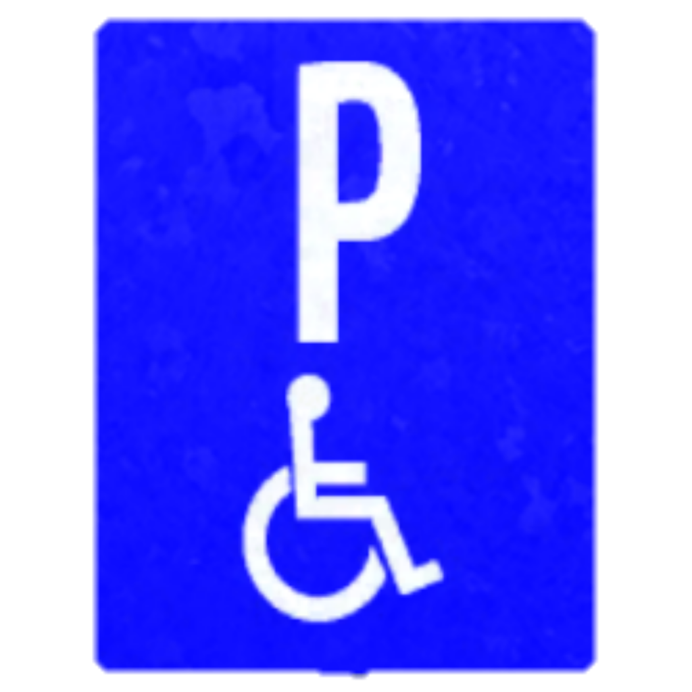

Mengikuti salah satu jalur
Mengikuti salah satu jalur Putar Arah
Putar ArahParkir Khusus Disabilitas
 Tempat parkir
Tempat parkir Tempat penyebrangan
Tempat penyebranganAda masjid di depan
 Pemberhentian taksi
Pemberhentian taksiAda gereja di depan
 Tempat pejalan kaki
Tempat pejalan kaki Petunjuk jurusan yang menunjukan arah daerah
Petunjuk jurusan yang menunjukan arah daerahRambu Lalu Lintas adalah bagian perlengkapan jalan yang berupa lambang, huruf, angka, kalimat, dan/atau
perpaduan yang berfungsi sebagai peringatan, larangan, perintah, atau petunjuk bagi pengguna jalan. Rambu lalu
lintas punya banyak jenis yang punya kegunaan atau fungsi masing-masing. Namun secara umum, rambu lalu lintas
berfungsi untuk mengatur jalannya lalu lintas agar tertib dan teratur.
Rambu-rambu ini juga berguna untuk memberikan peringatan, larangan, perintah dan petunjuk untuk pemakai jalan,
baik pejalan kaki atau pengendara. Rambu lalu lintas diatur menurut Peraturan Menteri Perhubungan Nomor 13 tahun
2014. Secara umum, ada 4 jenis rambu lalu lintas, yaitu: Rambu Peringatan, Rambu Larangan, Rambu Perintah, dan
Rambu Petunjuk.
Rambu Peringatan adalah rambu yang memberikan informasi berupa peringatan akan kemungkinan adanya bahaya dan sifat
dari bahaya tersebut kepada pengguna jalan. Pada rambu ini, dasar palang rambu berwarna kuning, sedangkan tulisan
atau simbol pada rambu berwarna hitam.
Berdasarkan Permenhub PM 13/2014, terdapat empat jenis rambu-rambu lalu lintas, yakni Rambu Peringatan, Rambu
Larangan, Rambu Perintah, dan juga Rambu Petunjuk.
Mengikuti salah satu jalurPutar ArahTempat parkirTempat penyebranganPemberhentian taksiTempat pejalan kakiPetunjuk jurusan yang menunjukan arah daerah Mengikuti arah kanan
Mengikuti arah kanan Mengikuti arah kiri
Mengikuti arah kiri Wajib belok kiri
Wajib belok kiri Wajib belok kananWajib lurus
Wajib belok kananWajib lurus Akhir batas kecepatan minimum
Akhir batas kecepatan minimum Prioritas dari arah berlawanan
Prioritas dari arah berlawanan Tikungan Tajam Ke Kiri
Tikungan Tajam Ke Kiri Tikungan Ke kanan
Tikungan Ke kanan Tikungan Ke kiri
Tikungan Ke kiri Tikungan Zig-zag/banyak tikungan
Tikungan Zig-zag/banyak tikungan Turunan Curam
Turunan Curam Peringatan Lampu merah
Peringatan Lampu merah Percabangan Jalan
Percabangan Jalan Tikungan ganda dengan tikungan pertama ke kiri
Tikungan ganda dengan tikungan pertama ke kiri.png) Lampu merah (Pejalan kaki)
Lampu merah (Pejalan kaki) Jalan Cembung
Jalan Cembung Jalan berliku
Jalan berliku Perbaikan jalan
Perbaikan jalan Persimpangan tiga serong kiri
Persimpangan tiga serong kiri Pertigaan di kanan
Pertigaan di kanan Pertigaan di kiri
Pertigaan di kiri Beri kesempatan
Beri kesempatan